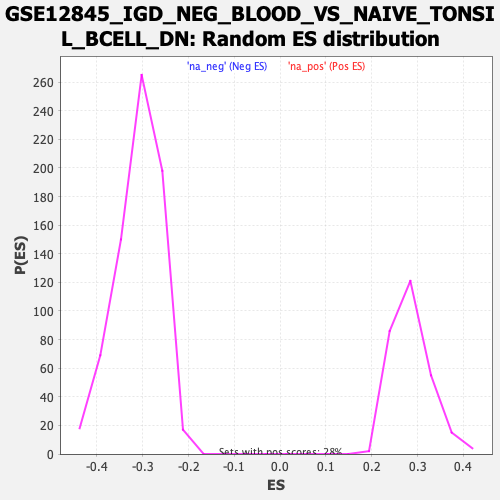

| | | Dataset | DE_genes |
| Phenotype | NoPhenotypeAvailable |
| Upregulated in class | na_neg |
| GeneSet | GSE12845_IGD_NEG_BLOOD_VS_NAIVE_TONSIL_BCELL_DN |
| Enrichment Score (ES) | -0.52811635 |
| Normalized Enrichment Score (NES) | -1.7046945 |
| Nominal p-value | 0.0 |
| FDR q-value | 0.0019448339 |
| FWER p-Value | 0.043 |
Table: GSEA Results Summary
 Fig 1: Enrichment plot: GSE12845_IGD_NEG_BLOOD_VS_NAIVE_TONSIL_BCELL_DN
Fig 1: Enrichment plot: GSE12845_IGD_NEG_BLOOD_VS_NAIVE_TONSIL_BCELL_DN
Profile of the Running ES Score & Positions of GeneSet Members on the Rank Ordered List
| PROBE | GENE SYMBOL | GENE_TITLE | RANK IN GENE LIST | RANK METRIC SCORE | RUNNING ES | CORE ENRICHMENT | | 1 | CHI3L2 | | | 74 | 7.299 | 0.0374 | No |
| 2 | CLEC4A | | | 89 | 6.489 | 0.0741 | No |
| 3 | CYTIP | | | 493 | 1.779 | 0.0580 | No |
| 4 | CIC | | | 1089 | 0.764 | 0.0235 | No |
| 5 | TGFB1 | | | 1170 | 0.699 | 0.0224 | No |
| 6 | ZNF117 | | | 1642 | 0.455 | -0.0058 | No |
| 7 | TMBIM4 | | | 1664 | 0.449 | -0.0046 | No |
| 8 | SNORA21 | | | 1926 | 0.348 | -0.0196 | No |
| 9 | GLIPR1 | | | 2023 | 0.319 | -0.0241 | No |
| 10 | GTPBP8 | | | 2049 | 0.312 | -0.0239 | No |
| 11 | CHST11 | | | 2069 | 0.305 | -0.0234 | No |
| 12 | DEF6 | | | 2248 | 0.255 | -0.0335 | No |
| 13 | MED1 | | | 2256 | 0.253 | -0.0325 | No |
| 14 | DNMT3A | | | 2308 | 0.242 | -0.0344 | No |
| 15 | GMFB | | | 2356 | 0.231 | -0.0362 | No |
| 16 | R3HDM2 | | | 2505 | 0.206 | -0.0447 | No |
| 17 | MARCKSL1 | | | 2686 | 0.178 | -0.0554 | No |
| 18 | CYTH4 | | | 2792 | 0.163 | -0.0613 | No |
| 19 | PHF1 | | | 2795 | 0.162 | -0.0605 | No |
| 20 | POLR2A | | | 2807 | 0.160 | -0.0603 | No |
| 21 | PADI1 | | | 2832 | 0.157 | -0.0610 | No |
| 22 | RSRC1 | | | 2842 | 0.157 | -0.0606 | No |
| 23 | TRIB2 | | | 2910 | 0.148 | -0.0642 | No |
| 24 | SNRNP25 | | | 3076 | 0.133 | -0.0742 | No |
| 25 | SKAP1 | | | 3087 | 0.132 | -0.0741 | No |
| 26 | MAPK1IP1L | | | 3169 | 0.126 | -0.0786 | No |
| 27 | DDR1 | | | 3497 | 0.099 | -0.0994 | No |
| 28 | CHML | | | 3732 | 0.086 | -0.1142 | No |
| 29 | RAD54B | | | 3843 | 0.079 | -0.1210 | No |
| 30 | PLIN1 | | | 3943 | 0.073 | -0.1270 | No |
| 31 | MMP2 | | | 4306 | 0.053 | -0.1504 | No |
| 32 | NEK1 | | | 4655 | 0.034 | -0.1729 | No |
| 33 | DDC | | | 4785 | 0.027 | -0.1812 | No |
| 34 | PLA2G10 | | | 4917 | 0.021 | -0.1897 | No |
| 35 | RPS6KA1 | | | 4961 | 0.018 | -0.1924 | No |
| 36 | LGALS8 | | | 5037 | 0.014 | -0.1972 | No |
| 37 | ZNF611 | | | 5095 | 0.011 | -0.2009 | No |
| 38 | LDOC1 | | | 5505 | -0.009 | -0.2275 | No |
| 39 | HK2 | | | 5506 | -0.009 | -0.2275 | No |
| 40 | PRKRIP1 | | | 5528 | -0.011 | -0.2288 | No |
| 41 | B4GALT5 | | | 5547 | -0.012 | -0.2299 | No |
| 42 | FAM169A | | | 5603 | -0.015 | -0.2334 | No |
| 43 | CWC25 | | | 5657 | -0.018 | -0.2368 | No |
| 44 | SLC50A1 | | | 5922 | -0.034 | -0.2538 | No |
| 45 | PIPOX | | | 6074 | -0.044 | -0.2635 | No |
| 46 | MMP17 | | | 6093 | -0.045 | -0.2644 | No |
| 47 | SLA | | | 6253 | -0.056 | -0.2744 | No |
| 48 | ZC3H15 | | | 6640 | -0.084 | -0.2992 | No |
| 49 | MTMR6 | | | 6648 | -0.084 | -0.2992 | No |
| 50 | ASTE1 | | | 6845 | -0.098 | -0.3114 | No |
| 51 | MAPK8IP3 | | | 6923 | -0.105 | -0.3158 | No |
| 52 | ZNF669 | | | 7010 | -0.111 | -0.3208 | No |
| 53 | ZNF148 | | | 7023 | -0.113 | -0.3209 | No |
| 54 | PDP1 | | | 7373 | -0.142 | -0.3429 | No |
| 55 | MEIS3P1 | | | 7375 | -0.142 | -0.3422 | No |
| 56 | USP8 | | | 7432 | -0.147 | -0.3450 | No |
| 57 | SATB1 | | | 7519 | -0.153 | -0.3497 | No |
| 58 | PDE8A | | | 7553 | -0.157 | -0.3510 | No |
| 59 | RBM23 | | | 7585 | -0.160 | -0.3521 | No |
| 60 | ZNF500 | | | 7851 | -0.184 | -0.3683 | No |
| 61 | FBXO41 | | | 7988 | -0.197 | -0.3761 | No |
| 62 | CSRNP2 | | | 8361 | -0.235 | -0.3990 | No |
| 63 | SH3BP2 | | | 8369 | -0.236 | -0.3981 | No |
| 64 | DUSP4 | | | 8386 | -0.238 | -0.3978 | No |
| 65 | TBC1D1 | | | 8649 | -0.268 | -0.4134 | No |
| 66 | IL6 | | | 8782 | -0.284 | -0.4204 | No |
| 67 | ASAP1 | | | 8809 | -0.287 | -0.4204 | No |
| 68 | HGSNAT | | | 8883 | -0.296 | -0.4235 | No |
| 69 | CKAP2 | | | 8964 | -0.305 | -0.4269 | No |
| 70 | APPL2 | | | 8966 | -0.305 | -0.4252 | No |
| 71 | CDKN1A | | | 9101 | -0.323 | -0.4321 | No |
| 72 | SRSF11 | | | 9104 | -0.323 | -0.4304 | No |
| 73 | AGPAT3 | | | 9232 | -0.338 | -0.4367 | No |
| 74 | SMPD1 | | | 9305 | -0.347 | -0.4394 | No |
| 75 | HMGXB4 | | | 9362 | -0.354 | -0.4410 | No |
| 76 | ARID1A | | | 9484 | -0.371 | -0.4468 | No |
| 77 | IKZF5 | | | 9500 | -0.374 | -0.4456 | No |
| 78 | RBM7 | | | 9772 | -0.413 | -0.4609 | No |
| 79 | MRPL52 | | | 9896 | -0.431 | -0.4665 | No |
| 80 | ETF1 | | | 9978 | -0.444 | -0.4692 | No |
| 81 | RABEP1 | | | 9990 | -0.445 | -0.4674 | No |
| 82 | CHD3 | | | 10100 | -0.462 | -0.4718 | No |
| 83 | MBP | | | 10326 | -0.494 | -0.4837 | No |
| 84 | RASSF2 | | | 10494 | -0.518 | -0.4916 | No |
| 85 | MUTYH | | | 10522 | -0.524 | -0.4903 | No |
| 86 | WBP11 | | | 10524 | -0.524 | -0.4873 | No |
| 87 | FILIP1L | | | 10658 | -0.547 | -0.4929 | No |
| 88 | TNFSF13 | | | 10676 | -0.550 | -0.4908 | No |
| 89 | KANSL2 | | | 10682 | -0.550 | -0.4879 | No |
| 90 | JAM2 | | | 10703 | -0.553 | -0.4861 | No |
| 91 | SNIP1 | | | 10830 | -0.572 | -0.4910 | No |
| 92 | TGFB3 | | | 10966 | -0.592 | -0.4964 | No |
| 93 | CD22 | | | 11000 | -0.597 | -0.4951 | No |
| 94 | RHOT2 | | | 11015 | -0.600 | -0.4925 | No |
| 95 | OLFM1 | | | 11086 | -0.613 | -0.4935 | No |
| 96 | CCNL1 | | | 11208 | -0.637 | -0.4978 | No |
| 97 | POLR1B | | | 11222 | -0.641 | -0.4949 | No |
| 98 | DENND4B | | | 11272 | -0.652 | -0.4943 | No |
| 99 | INVS | | | 11443 | -0.687 | -0.5015 | No |
| 100 | LASP1 | | | 11452 | -0.688 | -0.4980 | No |
| 101 | LPIN1 | | | 11498 | -0.698 | -0.4969 | No |
| 102 | ZBTB43 | | | 11610 | -0.722 | -0.5000 | No |
| 103 | RERE | | | 11734 | -0.748 | -0.5037 | No |
| 104 | PLEKHA1 | | | 11867 | -0.775 | -0.5078 | No |
| 105 | ALDOC | | | 11871 | -0.777 | -0.5035 | No |
| 106 | KDM2A | | | 12034 | -0.812 | -0.5094 | No |
| 107 | EIF4A3 | | | 12080 | -0.822 | -0.5076 | No |
| 108 | RNF44 | | | 12148 | -0.842 | -0.5071 | No |
| 109 | C1orf115 | | | 12238 | -0.862 | -0.5080 | No |
| 110 | MATK | | | 12292 | -0.876 | -0.5064 | No |
| 111 | CYP2R1 | | | 12318 | -0.882 | -0.5029 | No |
| 112 | SPAG4 | | | 12410 | -0.907 | -0.5036 | No |
| 113 | ZNF692 | | | 12780 | -1.005 | -0.5219 | No |
| 114 | UTP20 | | | 12875 | -1.037 | -0.5220 | Yes |
| 115 | MACF1 | | | 12969 | -1.068 | -0.5219 | Yes |
| 116 | GYPC | | | 13039 | -1.088 | -0.5202 | Yes |
| 117 | ARID5A | | | 13090 | -1.103 | -0.5170 | Yes |
| 118 | NOTCH1 | | | 13105 | -1.107 | -0.5115 | Yes |
| 119 | BTBD3 | | | 13149 | -1.120 | -0.5079 | Yes |
| 120 | RLF | | | 13213 | -1.144 | -0.5054 | Yes |
| 121 | PDE4C | | | 13257 | -1.157 | -0.5015 | Yes |
| 122 | SLC35E1 | | | 13302 | -1.175 | -0.4976 | Yes |
| 123 | SPIN1 | | | 13333 | -1.184 | -0.4927 | Yes |
| 124 | CRTC3 | | | 13385 | -1.207 | -0.4890 | Yes |
| 125 | CHKA | | | 13421 | -1.220 | -0.4842 | Yes |
| 126 | CD6 | | | 13425 | -1.221 | -0.4774 | Yes |
| 127 | ARHGEF9 | | | 13511 | -1.257 | -0.4757 | Yes |
| 128 | TNFRSF10D | | | 13537 | -1.268 | -0.4699 | Yes |
| 129 | TTC31 | | | 13582 | -1.286 | -0.4654 | Yes |
| 130 | ZNF862 | | | 13597 | -1.292 | -0.4588 | Yes |
| 131 | NKTR | | | 13598 | -1.292 | -0.4513 | Yes |
| 132 | PHLPP1 | | | 13612 | -1.296 | -0.4447 | Yes |
| 133 | SIK1 | | | 13666 | -1.317 | -0.4405 | Yes |
| 134 | SOX4 | | | 13678 | -1.321 | -0.4336 | Yes |
| 135 | RXRA | | | 13776 | -1.371 | -0.4320 | Yes |
| 136 | POLE | | | 13905 | -1.427 | -0.4321 | Yes |
| 137 | GIT1 | | | 13943 | -1.440 | -0.4262 | Yes |
| 138 | BHLHE40 | | | 13955 | -1.446 | -0.4185 | Yes |
| 139 | NAT10 | | | 13962 | -1.451 | -0.4105 | Yes |
| 140 | ZNF10 | | | 14021 | -1.481 | -0.4058 | Yes |
| 141 | CHL1 | | | 14038 | -1.495 | -0.3981 | Yes |
| 142 | ARHGEF1 | | | 14085 | -1.526 | -0.3923 | Yes |
| 143 | AGPAT2 | | | 14129 | -1.553 | -0.3861 | Yes |
| 144 | DENND3 | | | 14176 | -1.589 | -0.3800 | Yes |
| 145 | KLHL24 | | | 14270 | -1.648 | -0.3765 | Yes |
| 146 | PPM1F | | | 14323 | -1.672 | -0.3702 | Yes |
| 147 | DACT1 | | | 14400 | -1.718 | -0.3653 | Yes |
| 148 | ATF4 | | | 14548 | -1.828 | -0.3643 | Yes |
| 149 | SUGP2 | | | 14562 | -1.840 | -0.3545 | Yes |
| 150 | DCAF13 | | | 14578 | -1.851 | -0.3447 | Yes |
| 151 | C1QTNF1 | | | 14635 | -1.907 | -0.3374 | Yes |
| 152 | PRR14L | | | 14636 | -1.907 | -0.3263 | Yes |
| 153 | ANKRD11 | | | 14646 | -1.915 | -0.3158 | Yes |
| 154 | CLCN7 | | | 14715 | -1.988 | -0.3088 | Yes |
| 155 | KCNAB2 | | | 14777 | -2.043 | -0.3009 | Yes |
| 156 | NUDCD3 | | | 14839 | -2.096 | -0.2928 | Yes |
| 157 | KLF10 | | | 14843 | -2.100 | -0.2808 | Yes |
| 158 | NLRP1 | | | 14962 | -2.255 | -0.2755 | Yes |
| 159 | SYNE1 | | | 14981 | -2.282 | -0.2635 | Yes |
| 160 | GADD45A | | | 15049 | -2.381 | -0.2541 | Yes |
| 161 | ZNF160 | | | 15119 | -2.494 | -0.2441 | Yes |
| 162 | SPG7 | | | 15134 | -2.515 | -0.2305 | Yes |
| 163 | TMEM109 | | | 15144 | -2.536 | -0.2164 | Yes |
| 164 | SGSM3 | | | 15217 | -2.706 | -0.2054 | Yes |
| 165 | PGF | | | 15225 | -2.723 | -0.1901 | Yes |
| 166 | NR1D2 | | | 15236 | -2.742 | -0.1749 | Yes |
| 167 | NCAPH2 | | | 15248 | -2.789 | -0.1595 | Yes |
| 168 | MAT2A | | | 15289 | -2.885 | -0.1454 | Yes |
| 169 | TACC1 | | | 15297 | -2.924 | -0.1289 | Yes |
| 170 | MFNG | | | 15348 | -3.154 | -0.1140 | Yes |
| 171 | CIRBP | | | 15360 | -3.258 | -0.0958 | Yes |
| 172 | LMBR1L | | | 15372 | -3.368 | -0.0770 | Yes |
| 173 | MAFF | | | 15377 | -3.396 | -0.0576 | Yes |
| 174 | WDR74 | | | 15380 | -3.419 | -0.0380 | Yes |
| 175 | NR4A1 | | | 15395 | -3.552 | -0.0183 | Yes |
| 176 | ITPR3 | | | 15436 | -4.017 | 0.0023 | Yes |
Table: GSEA details [plain text format]

Fig 2: GSE12845_IGD_NEG_BLOOD_VS_NAIVE_TONSIL_BCELL_DN: Random ES distribution
Gene set null distribution of ES for GSE12845_IGD_NEG_BLOOD_VS_NAIVE_TONSIL_BCELL_DN